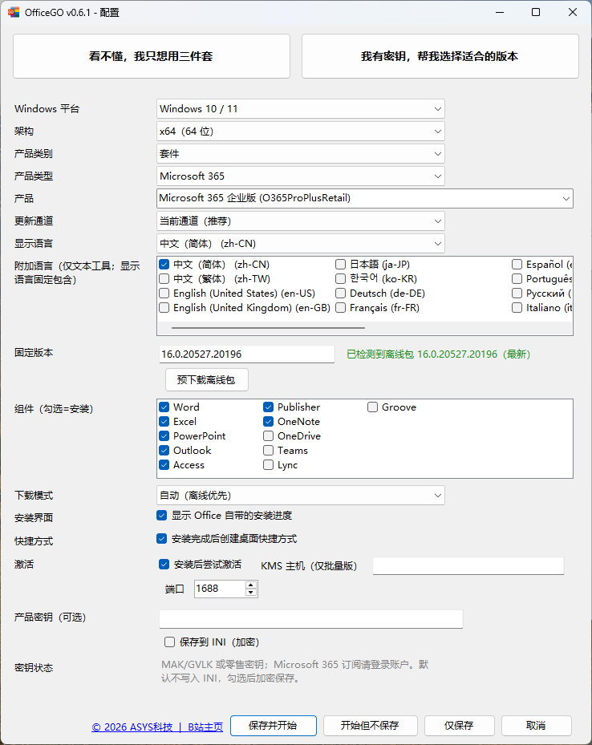
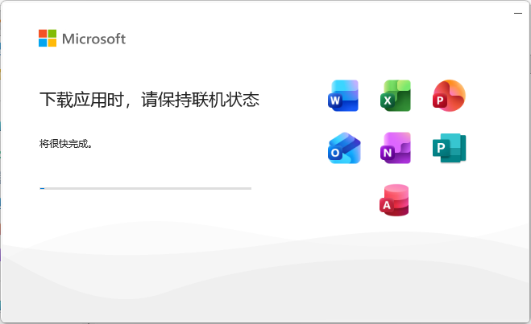

下载、安装、配置，一次搞定
从微软官方 CDN 下载官方原版文件，调用微软官方 Click-to-Run 安装；产品、架构、组件和语言都可以自己选，不用再折腾 ODT 和配置文件。
6117e6c83107d59967e320e9794024678170a7b6b672eeabae23625286d60cea


下载由 OfficeGO 完成，安装交给微软官方的 Click-to-Run 引擎，安装过程与官方原版一致。
直接从微软官方 CDN 下载官方原版文件，支持多线程分段和断点续传；也可以预下载完整安装包，拷到别的电脑直接安装。
不依赖 ODT 的 setup.exe，直接调用微软官方的 Click-to-Run 引擎，安装的就是微软官方原版 Office。
产品、架构、组件、语言逐层选择；常用组合可以保存为 INI，下次直接复用。
Microsoft 365 / 2024 / 2021 / 2019 / 2016 / Mondo，套件与单产品均可选，Visio 与 Project 也能一并装。
Word、Excel、PowerPoint、Outlook 等按需选择，不用的组件不装，省空间也省时间。
粘贴产品密钥离线识别版本，自动匹配产品与更新通道，不做任何授权绕过。
下载单文件 exe，双击运行，无需安装。没有配置文件时自动弹出配置窗口。
按架构、产品类别、版本、组件和语言逐层选择，也可以把配置保存为 INI，下次直接复用。
OfficeGO 自动下载所需文件，调用 Office 自带的 Click-to-Run 完成安装。
未签名提示：当前 exe 未做代码签名，SmartScreen 可能提示。点「更多信息」→「仍要运行」即可。
授权说明：OfficeGO 不包含任何激活或授权绕过逻辑。Microsoft 365 订阅仍需登录账号；KMS 必须是你有权使用的服务器。Office 是微软的商业软件，请自备合法授权。
文件来源：安装文件来自微软官方 CDN（officecdn.microsoft.com）。